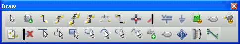
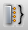
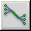

The Draw Toolbar provides shortcuts for commands to place components, pins, wires, bus, and drawing objects, such as arcs, polyline, ellipse, and text. The following table describes the icons on the toolbar.
Tool
Name
Description
Select
Selects objects. This is the normal mode.
Place part
Selects parts from a library for placement. Equivalent to the Part command on the Place menu.
Place wire
Draws wires. shift allows any angle drawing. Equivalent to the Wire command on the Place menu.
Auto Connect two points
Switches the Schematic page editor into the Auto connect mode and allows you to connect two points on the page.
Auto Connect multi points
Switches the Schematic page editor into the Auto connect mode and allows you to connect multiple points on the page.
Switches the Schematic page editor into the Auto connect mode and allows you to connect points to a bus.
Place net alias
Places aliases on wires and buses. Equivalent to the Net Alias command on the Place menu.
Place bus
Draws buses. shift allows any angle drawing. Equivalent to the Bus command on the Place menu.
Place junction
Places or deletes junctions. Equivalent to the Junction command on the Place menu.
Place bus entry
Draws bus entries. Equivalent to the Bus Entry command on the Place menu.
Place power
Places power symbols. Equivalent to the Power command on the Place menu.
Place ground
Places ground symbols. Equivalent to the Ground command on the Place menu.
Place hierarchical block
Places hierarchical blocks. Equivalent to the Hierarchical Block command on the Place menu.
Place port
Places hierarchical ports on schematic pages. Equivalent to the Hierarchical Port command on the Place menu.
Place pin
Places hierarchical pins in the selected hierarchical block. Equivalent to the Hierarchical Pin command on the Place menu.
Place off-page connector
Places off-page connectors. Equivalent to the Off-Page Connector command on the Place menu.
Place no connect
Places no-connect symbols on pins. Equivalent to the No Connect command on the Place menu.
Place line
Draws lines. Equivalent to the Line command on the Place menu.
Place polyline
Draws polylines. shift allows any angle drawing. Equivalent to the Polyline command on the Place menu.
Place rectangle
Draws rectangles. shift constrains the shape to a square. Equivalent to the Rectangle command on the Place menu.
Place ellipse
Draws ellipses. shift constrains the shape to a circle. Equivalent to the Ellipse command on the Place menu.
Place arc
Draws arcs. Equivalent to the Arc command on the Place menu.
Place elliptical arc
Draws elliptical arcs. Equivalent to the Elliptical Arc command on the Place menu.
Place bezier curve
Draws bezier curves. Equivalent to the Bezier Curve command on the Place menu.
Place text
Places text. Equivalent to the Text command on the Place menu.
Place IEEE Symbol
Places IEEE symbols. Equivalent to the IEEE Symbol command on the Place menu. This command is available in the Part Editor.

Place Pin Array
Places pin arrays. Equivalent to the Pin Array command on the Place menu. This command is available in the Part Editor.

Place Bundle
Opens the Bundle dialog box that allows you to create, modify, delete bus bundles. You can also import Xml bundle definitions into the current design.